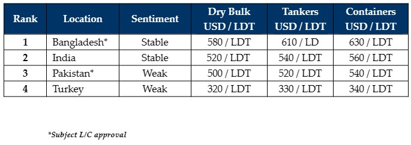

inWeekly Demolition Reports22/05/2023

Markets have been on an upward trajectory over the last couple of weeks as tonnage continues to remain at bare minimums,especially over the traditionally quieter summer / monsoon months and charter rates remain at acceptable enough levels for Owners to keep their various vintage vessels in the trading lanes.
Some of the recent market declines of about USD 50 – USD 60/LDT and struggles on L/Cs in the Bangladeshi and Pakistani markets (in particular) may have spooked Sellers and Cash Buyers alike, and for those that were willing to sell above USD 600/LDT, they may now be unwilling to enter the market as they are being greeted by new lower realities in the USD 500s/LDT.
Sales have therefore been at a premium in recent times, although several older bulkers were committed and one 1977 built LNG carrier was confirmed this week basis an ‘as is’ Labuan delivery for an HKC resale only.
Increasingly, most high-profile Sellers are looking to sell for HKC recycling only, and the bulk of the major container owners such as Maersk, MSC, Wan Hai, and Evergreen have committed vessels this year for strict HKC recycling into India.
It is certainly encouraging that certain yards in Bangladesh – three now in total – have managed to obtain class NK HKC certification and have made major upgrades to their facilities in order to encourage other yards to improve likewise.
Discussions will be taking place this coming week in Bangladesh, in order to ratify the Hong Kong convention and we will certainly be keeping a close watch on events to see what finally transpires, and the impact it will have on the industry moving forward.
Finally, while Pakistan remains in the dumps with no new fixtures or fresh arrivals at the waterfront, the Turkish market, though weaker, is distracted with the ongoing Presidential elections in the country.
For week 20 of 2023, GMS demo rankings / pricing for the week are as below.

📄 Download PDF: Ship-recycling-market-insight-week-20-2023-Upward-Trajectory.pdfSource: GMS,Inc. ,https://www.gmsinc.net/gms_new/index.php/web